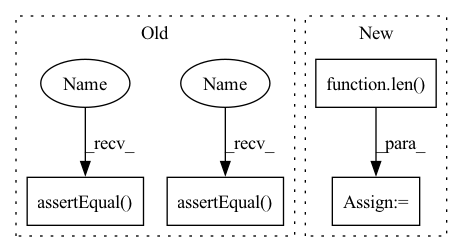

Pattern ID :34671

Before Change
kt = gm(features)
self.assertEqual(kt.values().size(), (B, D))
self.assertEqual(kt.keys(), ["f1", "f3", "f2"])
self.assertEqual(kt.offset_per_key(), [0, 3, 6, 10])
// TODO(T89043538): Auto-generate this test.
def test_fx_script(self) -> None:
eb1_config = EmbeddingBagConfig(
After Change
ebc = EmbeddingBagCollection(tables=[eb1_config, eb2_config])
sparse_arch = SparseArch(ebc)
F = len(sparse_arch.sparse_feature_names)
gm = symbolic_trace(sparse_arch)
FileCheck().check("KeyedJaggedTensor").check("cat").run(gm.code)
In pattern: SUPERPATTERN
Frequency: 3
Non-data size: 4
Instances
Fragment ID: 99573199
Project Name: facebookresearch/torchrec
Commit Name: 45ade1a7e314ed88b26c4df136c1128df9df5ef3
Time: 2022-02-28
Author: yingliufb@fb.com
File Name: torchrec/models/tests/test_dlrm.py
M Class Name: SparseArchTest
N Class Name: SparseArchTest
M Method Name: test_fx_and_shape(1)
N Method Name: test_fx_and_shape(1)
M Parent Class: unittest.TestCase
N Parent Class: unittest.TestCase
M File Name: torchrec/models/tests/test_dlrm.py
N File Name: torchrec/models/tests/test_dlrm.py
M Start Line: 105
M End Line: 140
N Start Line: 87
N End Line: 117
'>
Before Change
// compare
self.assertEqual(len(object_prediction_list), 11)
self.assertEqual(object_prediction_list[0].category.id, 2)
self.assertEqual(object_prediction_list[0].category.name, "car")
desired_bbox = [448, 309, 49, 33]
predicted_bbox = object_prediction_list[0].bbox.to_xywh()
margin = 2
for ind, point in enumerate(predicted_bbox):
After Change
// get raw predictions for reference
original_results = yolov8_detection_model.model.predict(image_path, conf=CONFIDENCE_THRESHOLD)[0].boxes
num_results = len(original_results)
// perform inference
yolov8_detection_model.perform_inference(image)
'>
Fragment ID: 99573182
Project Name: obss/sahi
Commit Name: 9b5aeb2fa698fd13b80e9d084f4d72951994abcb
Time: 2023-03-07
Author: janne.mayra@gmail.com
File Name: tests/test_yolov8model.py
M Class Name: TestYolov8DetectionModel
N Class Name: TestYolov8DetectionModel
M Method Name: test_convert_original_predictions(1)
N Method Name: test_convert_original_predictions(1)
M Parent Class: unittest.TestCase
N Parent Class: unittest.TestCase
M File Name: tests/test_yolov8model.py
N File Name: tests/test_yolov8model.py
M Start Line: 117
M End Line: 135
N Start Line: 98
N End Line: 139
'>
Before Change
kt = gm(features)
self.assertEqual(kt.values().size(), (B, D))
self.assertEqual(kt.keys(), ["f1", "f3", "f2"])
self.assertEqual(kt.offset_per_key(), [0, 3, 6, 10])
// TODO(T89043538): Auto-generate this test.
def test_fx_script(self) -> None:
eb1_config = EmbeddingBagConfig(
After Change
ebc = EmbeddingBagCollection(tables=[eb1_config, eb2_config])
sparse_arch = SparseArch(ebc)
F = len(sparse_arch.sparse_feature_names)
gm = symbolic_trace(sparse_arch)
FileCheck().check("KeyedJaggedTensor").check("cat").run(gm.code)
'>
Fragment ID: 99573178
Project Name: facebookresearch/torchrec
Commit Name: 45ade1a7e314ed88b26c4df136c1128df9df5ef3
Time: 2022-02-28
Author: yingliufb@fb.com
File Name: torchrec/models/tests/test_dlrm.py
M Class Name: SparseArchTest
N Class Name: SparseArchTest
M Method Name: test_fx_and_shape(1)
N Method Name: test_fx_and_shape(1)
M Parent Class: unittest.TestCase
N Parent Class: unittest.TestCase
M File Name: torchrec/models/tests/test_dlrm.py
N File Name: torchrec/models/tests/test_dlrm.py
M Start Line: 105
M End Line: 140
N Start Line: 87
N End Line: 117
'>
Before Change
B = (len(offsets) - 1) // len(keys)
kt = sparse_arch(features)
self.assertEqual(kt.values().size(), (B, D))
self.assertEqual(kt.keys(), ["f1", "f3", "f2"])
self.assertEqual(kt.offset_per_key(), [0, 3, 6, 10])
expected_values = torch.tensor(
[
After Change
B = (len(offsets) - 1) // len(keys)
sparse_features = sparse_arch(features)
F = len(sparse_arch.sparse_feature_names)
self.assertEqual(sparse_features.shape, (B, F, D))
expected_values = torch.tensor(
[
'>
Fragment ID: 99573210
Project Name: facebookresearch/torchrec
Commit Name: 45ade1a7e314ed88b26c4df136c1128df9df5ef3
Time: 2022-02-28
Author: yingliufb@fb.com
File Name: torchrec/models/tests/test_dlrm.py
M Class Name: SparseArchTest
N Class Name: SparseArchTest
M Method Name: test_basic(1)
N Method Name: test_basic(1)
M Parent Class: unittest.TestCase
N Parent Class: unittest.TestCase
M File Name: torchrec/models/tests/test_dlrm.py
N File Name: torchrec/models/tests/test_dlrm.py
M Start Line: 34
M End Line: 97
N Start Line: 33
N End Line: 79